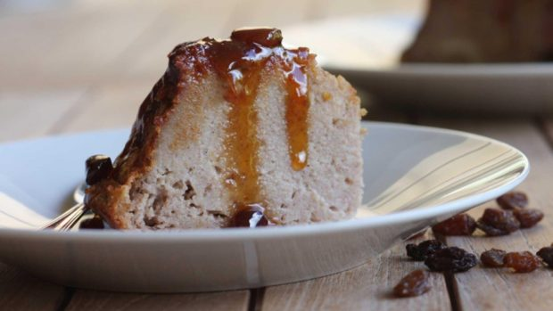
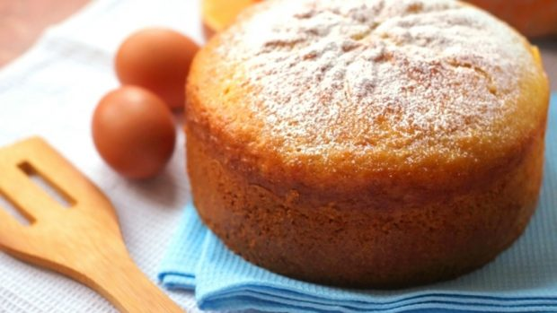

Budin de Pan

Primer Paso Cortar el pan en trozos pequeños. El pan puede ser viejo, es decir no es necesario que esté crocante, de hecho el budín de pan es una receta justa para reciclar el pan que ya está con consistencia gomosa.
Colocar los trozos de pan en la licuadora junto con la leche que tiene que estar tibia (no caliente). Dejar hidratando en la leche tibia durante media hora.
Mientras tanto vamos a hacer el caramelo: colocar en una olla antiadherente un vaso de azúcar. En otro recipiente ponemos a hervir medio vaso de agua. Cuando el azúcar esté completamente derretida retiramos del fuego y agregamos el agua hirviendo, revolvemos hasta que esté totalmente integrado. Luego dejamos enfriar hasta que esté listo el caramelo. Les recomiendo que vean la receta completa en el link que les dejé mas arriba, que con caramelo caliente no se juega!
Segundo Paso Ahora llevamos el caramelo al molde en el que vamos a hacer el budín de pan. Es importante asegurarnos de que el caramelo cubra todo el fondo y los bordes como pueden ver en el video.
Una vez pasada la media hora vamos a licuar el pan y la leche. Yo lo hago completamente licuado hasta obtener una crema, si ustedes quieren que se noten los pedacitos de pan pueden licuarla menos.
Luego de obtener la consistencia deseada agregamos el azúcar y los huevos y volvemos a licuar hasta integrar completamente.
Incorporar la ralladura de limón (si quieren pueden también agregar esencia de vainilla). Si está muy espesa éste es el momento de agregar un poco de leche antes de volver a licuar por última vez.
Tercer Paso Colocar la mezcla en el molde bañado de caramelo y tapar con papel manteca. El papel manteca cumple la función de que el budín de pan no se seque, realmente funciona!
Para hacer éste budín de pan necesitamos cocinarlo a a baño maría, por lo que vamos a colocar el molde del budín en una placa para horno que contenga agua.
Cocinar a 160º (mínimo) durante 1 hora. Desmoldar y dejar que se enfríe antes de servir. Ideal para acompañar con dulce de leche o crema !
Bizcochuelo de Vainilla

Primer Paso Vamos a cascar los huevos y volcarlos en un recipiente junto con el azúcar y lo vamos a batir. Yo uso la batidora pero obvio que se puede hacer a tenedor alzado. Este paso se llama “cremar” la mezcla. Justamente, es batir hasta que aclare un poco el color y se vuelva espesa la mezcla y crezca. Una vez que veamos que la mezcla aclaró y creció, vamos a agregar el aceite y a seguir batiendo. La idea es que sea un aceite neutro que no aporte un sabor demasiado fuerte a la preparación. Agregamos unas gotitas de esencia de vainilla y seguimos batiendo y batiendo.
Segundo Paso Una vez que está todo unido, vamos a dejar de batir y vamos a agregar la primera taza de harina junto con la cucharadita de polvo para hornear, tamizándolos con un coladorcito. Mezclamos, esta vez sí con una espátula y movimientos envolventes. Una vez que se incorporó todo bien, agregamos al segunda taza de harina y repetimos el procedimiento de mezclado.
Ahora viene el momento en el que nos toca evaluar cuán espesa nos quedó la mezcla (en el video se puede ver una referencia, pero igual confíen en sus criterios bizcochueleros).
Si ven que les quedó muy espeso, pueden ir agregando chorritos de leche de a poquito hasta que la mezcla consiga la consistencia deseada. por el contrario, si ven que quedó muy líquido, se hace lo mismo pero con la harina.
Tercer Paso Una vez que la mezcla consiguió la consistencia ideal, nos queda enmantecar y enharinar un molde y volcarla adentro sin más rodeos. Al horno 180º por entre 40 y 50 min aproximadamente. ¡Sean pacientes! dejen el horno cerrado hasta que pasen los primeros 40 min porque sino nuestra maravillosa creación corre peligro de pincharse y no es lo que queremos. ¡Momento de la prueba del palito! Pasados los 40 minutos, podemos abrir el horno e introducir un palillo o cuchillo dentro del bizcochuelo, si sale seco, quiere decir que está listo y es momento de sacarlo. Sepan que antes de desmoldarlo es muy conveniente dejar que se entibie, para correr menos riesgo de que se rompa. A su vez, hay que no dejar se termine de enfriar para que el calor no lo humedezca.